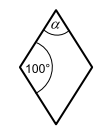
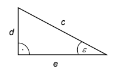
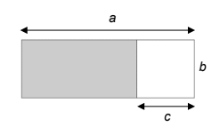

Auf eine Hose, die 40 € kostet, gibt es
8 € Rabatt.
Gib den Rabatt in % an.
Gib 1,3 cm² in mm² an.
Kennzeichne in dem abgebildeten Kreis
drei Viertel der Fläche.
Ziehe den Punkt auf der Kreislinie, um den
markierten Anteil einzustellen.
Einer der folgenden Terme entspricht
4 · (3x − 7).
Kreuze an.
Gib in der abgebildeten Raute die Größe des Winkels α an.
(Abbildung nicht maßstabsgerecht)

Ein Würfel hat ein Volumen von 27 cm³.
Kreuze die Länge einer Kante an.
Ermittle den Oberflächeninhalt des Würfels.
Rechenweg:
Ergebnis:
Kreuze an, mit welcher Gleichung die Größe des Winkels ε des abgebildeten Dreiecks berechnet werden kann.

Gib die Zahl 5 470 000 000 in der Zehnerpotenzschreibweise (wissenschaftlichen Schreibweise) an.
Die Abbildung zeigt ein Rechteck.
Kreuze die Gleichung an, mit der man den Flächeninhalt
der grauen Fläche berechnen kann.
